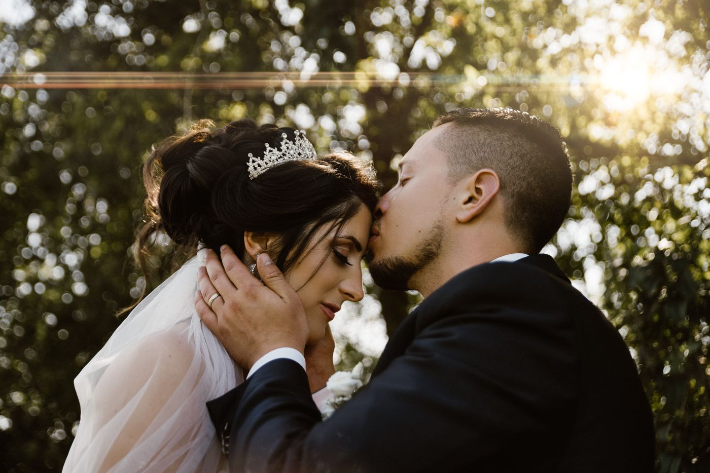
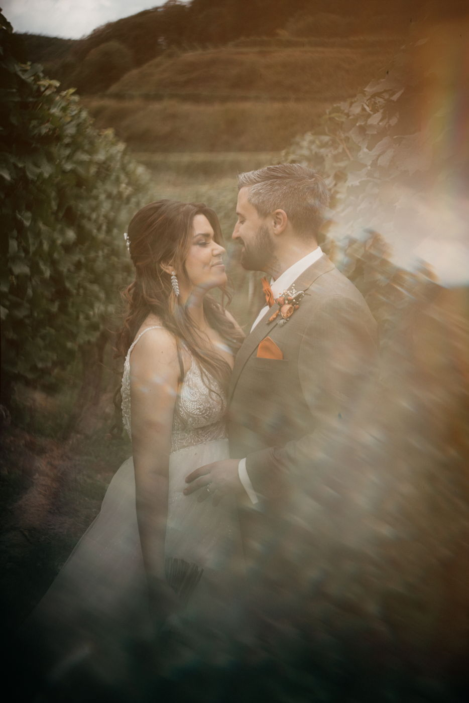
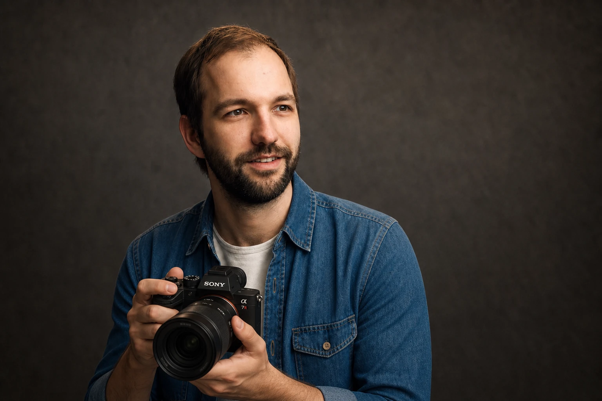

Hochzeitsfotografie · Deutschland / Schweiz
Hochzeitsfotograf
KI-generiertes Video
Hochzeitsfotograf
Freiburg · Basel · Offenburg.
Natürliche Reportagen mit filmischem Licht, ruhiger Begleitung und einem Blick für alles, was zwischen den geplanten Momenten passiert.
Ich begleite Hochzeiten mit dem Blick eines Filmemachers: aufmerksam für Licht, Bewegung, Zwischentöne und die Menschen, die euren Tag prägen. So entsteht eine zusammenhängende Reportage statt einer Sammlung austauschbarer Einzelbilder.
Drei echte Reportagen
Drei Hochzeiten. Drei echte Geschichten.

Mareike & Daniel

Albana & Max

Lucas & Valerie

KI-generiert
Andreas Boehler · Fotograf & Filmemacher
Ihr sollt euren Tag erleben. Nicht für die Kamera spielen.
Mein Hintergrund in Film, Regie und Fotografie prägt die Reportage: Ich denke in Licht, Rhythmus und zusammenhängenden Szenen. Am Hochzeitstag bleibe ich aufmerksam und unaufdringlich. Bei Portraits gebe ich klare, einfache Impulse – ohne euch in fremde Posen zu drücken.
- Ruhige Vorbereitung statt Fotostress
- Dokumentarische Momente plus geführte Portraits
- Ein konsistenter Look über den ganzen Tag
Dreiländereck
Drei Regionen. Eine ruhige, filmische Handschrift.
Altstadt, Reben und Schwarzwald.
Standesamtliche Begleitungen in Freiburg, Feiern am Tuniberg oder Kaiserstuhl und Reportagen zwischen Stadt, Weinbergen und Dreisamtal.
Urban, elegant und grenznah.
Ziviltrauung, Apéro und Paarshooting zwischen Basler Altstadt, Rhein, Riehen, Baselland und der gesamten Nordwestschweiz.
Weinberge, Schlösser und Weite.
Hochzeiten in Offenburg, der Ortenau und im nördlichen Schwarzwald – vom kompakten Standesamt bis zur ganztägigen Feier.
Nähe ohne Kitsch
Die stärksten Momente passieren zwischen den geplanten Bildern.
Ein kurzer Blick, eine Handbewegung, das Licht nach der Trauung: Ich halte diese Momente fest, ohne den Tag für die Kamera anzuhalten.
Termin anfragen
Preise & Pakete
Ein klarer Rahmen für euren Tag.
Standesamt & Portraits
2–3 Stunden- Persönliches Vorgespräch
- Trauung und Gratulation
- Gruppenbilder und Paarshooting
- Auswahl und filmischer Farblook
- Hochauflösende private Online-Galerie
Individuelles Angebot nach Datum und Ort.
Paket anfragenKleine Reportage
5–6 Stunden- Persönliche Vorbereitung
- Trauung und Sektempfang
- Gruppenbilder und Paarshooting
- Details und zentrale Programmpunkte
- Hochauflösende private Online-Galerie
Individuelles Angebot nach Ablauf und Location.
Paket anfragenGanztägige Reportage
8–10 Stunden- Planung des fotografischen Ablaufs
- Getting-ready bis zur Feier
- Trauung, Empfang und Portraits
- Atmosphäre, Gäste und Details
- Hochauflösende private Online-Galerie
Individuelles Angebot für eure vollständige Geschichte.
Paket anfragenAuf Wunsch können zusätzliche Stunden, ein separates Paar- oder After-Wedding-Shooting und weitere Ausgaben individuell besprochen werden.
So läuft es ab
Klar vorbereitet. Am Tag selbst ganz bei euch.
Anfrage
Datum, Ort, Dauer und eure grobe Planung reichen für den ersten Verfügbarkeitscheck.
Kennenlernen
Wir sprechen über euch, die Atmosphäre, wichtige Menschen und darüber, was euch bei Bildern wirklich wichtig ist.
Vorbereitung
Ablauf, Licht, Wege, Gruppenbilder und Zeitfenster für Portraits werden so geplant, dass der Tag nicht zur Fotoproduktion wird.
Reportage
Nach der Hochzeit entsteht aus Auswahl, Farblook und Bearbeitung eure vollständige Geschichte in einer privaten Online-Galerie.
FAQ
Was Paare vor der Anfrage wissen möchten.
Was kostet ein Hochzeitsfotograf in Freiburg?
Der Preis hängt vor allem von Dauer, Datum, Ort und Leistungsumfang ab. Nach eurer Anfrage erhaltet ihr ein transparentes individuelles Angebot auf Basis des passenden Pakets.
Was ist in den Hochzeitspaketen enthalten?
Alle Pakete enthalten Vorgespräch, fotografische Begleitung, sorgfältige Auswahl und Bearbeitung sowie die hochauflösende Übergabe in einer privaten Online-Galerie.
Begleitest du standesamtliche Trauungen in Freiburg?
Ja. Das kompakte Paket verbindet Trauung, Gratulation, Gruppenbilder und ein entspanntes Paarshooting in Freiburg oder der näheren Umgebung.
In welchen Regionen fotografierst du?
Der Schwerpunkt liegt auf Freiburg, Offenburg, Kaiserstuhl und Basel. Reportagen sind auch im Schwarzwald, Elsass, in der Ortenau und an weiteren Orten möglich.
Wie ist dein Stil?
Natürlich, dokumentarisch und filmisch. Echte Situationen stehen im Mittelpunkt; bei Portraits gebe ich nur so viel Führung, wie euch Sicherheit gibt.
Wie werden die Hochzeitsbilder übergeben?
Die final ausgewählten und bearbeiteten Bilder erhaltet ihr hochauflösend in einer privaten Online-Galerie. Details und Lieferzeit stehen im persönlichen Angebot.
Was passiert bei schlechtem Wetter?
Wir besprechen vorab passende Alternativen und überdachte Optionen. Leichter Regen kann mit der richtigen Planung sogar sehr atmosphärische Bilder ermöglichen.
Wie starten wir die Anfrage?
Schickt mir Datum, Ort, gewünschte Dauer und einen groben Ablauf. Danach klären wir in einem kurzen Gespräch, welches Paket und welcher Schwerpunkt zu euch passen.
Wie weit im Voraus sollten wir anfragen?
Beliebte Samstage zwischen Mai und September werden oft viele Monate im Voraus geplant. Eine frühe Anfrage ist sinnvoll; für Wochentage, Standesamt und Nebensaison können auch kurzfristigere Termine möglich sein.
Wie viele Bilder bekommen wir?
Die Anzahl hängt von Dauer, Gästezahl und Ablauf ab. Ihr bekommt keine künstlich aufgefüllte Quote, sondern alle gelungenen Motive, die eure Geschichte vollständig erzählen. Der erwartbare Rahmen steht im Angebot.
Hilfst du uns beim Zeitplan?
Ja. Im Vorgespräch prüfen wir Licht, Wege, Gratulation, Gruppenbilder und Paarshooting. Ziel ist ein realistischer Ablauf mit genügend Luft für euch und eure Gäste.
Wie organisieren wir Gruppenbilder stressfrei?
Vorab legen wir die wichtigsten Kombinationen fest. Eine vertraute Person aus der Gesellschaft kann helfen, die jeweiligen Gruppen schnell zusammenzurufen.
Können wir Foto und Video kombinieren?
Durch meinen Hintergrund als Filmemacher kann eine kombinierte Lösung je nach Datum und Umfang individuell geplant werden. Entscheidend ist, dass Foto und Film denselben visuellen Ton treffen.
Ist ein zweiter Fotograf möglich?
Bei großen Hochzeiten, parallelem Getting-ready oder räumlich getrennten Abläufen kann ein zweiter Blickwinkel sinnvoll sein. Ob das für euch einen echten Mehrwert bringt, klären wir im Angebot.
Sind Engagement- oder After-Wedding-Shootings möglich?
Ja, solche Shootings können unabhängig vom engen Tagesablauf geplant werden und eignen sich auch für Einladungen, Save-the-Date oder eine besondere Location.
Was gilt bei einer Verschiebung oder Absage?
Die Bedingungen für Reservierung, Verschiebung und Absage werden transparent in der Vereinbarung festgehalten. Bei einer Verschiebung prüfen wir zuerst gemeinsam einen passenden Ersatztermin.
Welche Reise- und Fahrtkosten entstehen?
Fahrten im vereinbarten regionalen Radius und zusätzliche Reisekosten werden vor der Buchung transparent ausgewiesen. Für Basel und die Schweiz wird das Angebot passend zum Einsatzort kalkuliert.
Dürfen wir die Bilder teilen und drucken?
Der private Nutzungsumfang für Download, Teilen und persönliche Prints wird im Angebot klar geregelt. Veröffentlichungen durch Dienstleister oder kommerzielle Partner werden separat abgestimmt.
Erzählt mir von eurem Tag.
Datum, Ort und gewünschte Begleitdauer reichen für den ersten Verfügbarkeitscheck. Alles Weitere klären wir persönlich und ohne Verkaufsdruck.
andy@andreasboehler.com